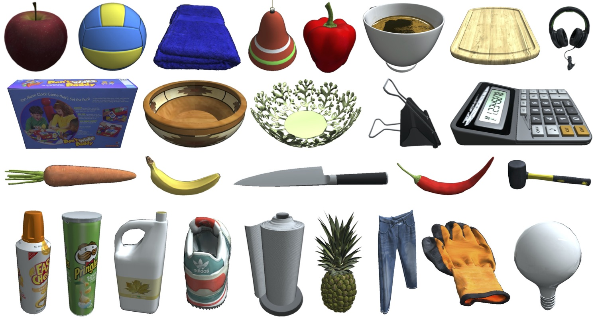

The BEHAVIOR Dataset of Objects
 In total, we have curated and made available 1217 object models of 391 different object categories to support 100 BEHAVIOR activities. The categories range from food items to tableware, from home decorations to office supplies, and from decoration to cleaning tools. All models in the BEHAVIOR Dataset are organized following the WordNet, associating them to synsets. This structure allows us to define properties for all models of the same categories, but it also facilitates more general sampling of activity instances fulfilling initial conditions such as onTop(fruit, table) that can be achieved using any model within the branch fruit of WordNet.
To reach a high level of visual realism, all object models include material information (metallic, roughness) to be used by a physics-based renderer (PBR) such as the renderer in iGibson 2.0. Our goal is that the outcome of the physical interactions with these models is as realistic as possible: the object models have been annotated with realistic scale, mass, center of mass, moment of inertia, and stable orientations to facilitate their sampling. The collision mesh is a simplified version of the visual mesh, obtained with a convex decomposition using the VHACD algorithm. Object models with a shape close to a box are annotated with a primitive box collision mesh, much more efficient and robust for collision checking and physical simulation.
You can add your own object models to BEHAVIOR by following the instructions here.
This describes the file structure in the BEHAVIOR Object Dataset:
OBJECT_NAME
│ # Unified Robot Description Format (URDF)
│ # http://wiki.ros.org/urdf
│ # It defines the object model (parts, articulation, dynamics properties etc.).
│ OBJECT_NAME.urdf
│
└───shape
│ └───visual
│ │ │ # Directory containing visual meshes (vm) of the object. Used for iGibson's rendering. Encrypted
│ │ │ # All objs are UV mapped onto the same texture, linked by default.mtl. All faces are triangles.
│ │ │ vm1.encrypted.obj
│ │ │ vm2.encrypted.obj
│ │ │ …
│ │ │ default.mtl (links the geometry to the texture files)
│ │
│ └───collision
│ │ │ # Directory containing collision meshes (cm) of the objects. Used for iGibson's physics simulation.
│ │ │ # Each obj represents a unique link of the object.
│ │ │ # For example, link_1_cm.obj represents the collision mesh of link_1.
│ │ │ cm1.obj
│ │ │ cm2.obj
│ │ │ …
│
└───material
│ │ # Contains 4 default channels:
│ │ # DIFFUSE.png (RGB albedo map)
│ │ # METALLIC.png (metallic map)
│ │ # NORMAL.png (tangent normal map)
│ │ # ROUGHNESS.png (roughness map)
| | # Also contains diffuse texture maps that will be used when some object state changes happen, e.g. cooked, burnt, or soaked.
│ │ DIFFUSE.encrypted.png
│ │ METALLIC.encrypted.png
│ │ NORMAL.encrypted.png
│ │ ROUGHNESS.encrypted.png
│ │ DIFFUSE_Frozen.encrypted.png
│ │ DIFFUSE_Cooked.encrypted.png
│ │ DIFFUSE_Burnt.encrypted.png
│ │ DIFFUSE_Soaked.encrypted.png
│ │ DIFFUSE_ToggledOn.encrypted.png
│
└───misc
│ │ # contains bounding box information of the object, its stable orientations, object state-related link annotation (e.g. toggle button, water/heat/cold source, slicer/cleaning_tool, etc)
│ │ metadata.json
│ │ # contains the object’s material annotation of what kinds of material each link can have.
│ │ material_groups.json
│ │ # contains info about the minimum volume oriented bounding box that best fits the object
│ │ mvbb_meta.json
│
└───visualizations
│ │ # An image and a video of the object rendered with iG renderer
│ │ 00.png
│ │ OBJECT_NAME.mp4